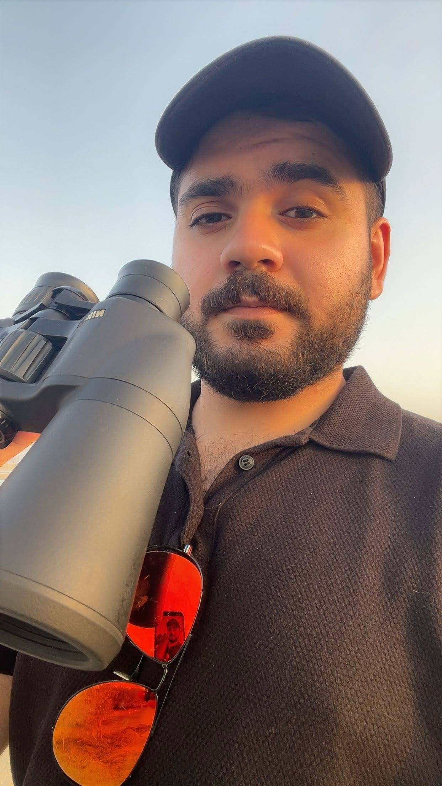

Bridging environmental science, data analysis, and sustainability to understand and inform real-world ecosystems.

Environmental Impact Assessments (EIA), Environmental Baseline Studies (EBS), biodiversity assessment, sustainability analysis, and environmental data-driven research across marine, coastal, and terrestrial systems.
Working across consulting, research, and sustainability contexts, with experience supporting regulatory frameworks (EAD, DM, DECCA, ISO 14001) and contributing to ESG and environmental reporting practices.
My work integrates field-based ecology, environmental data analysis, and sustainability thinking — applying quantitative and scientific approaches to understand ecosystems, support decision-making, and contribute to both applied and research-driven environmental work.